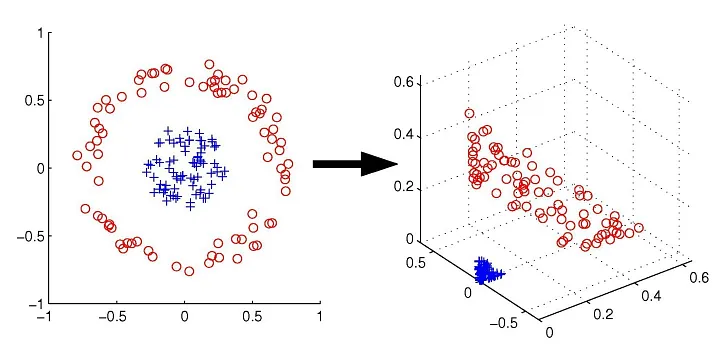

4 커널회귀
4.1 RKHS
어떤 \(n\times p\) 행렬 \(A\)가 있을 때 이것의 column space를 \(C(A)\)라고 하자.
Ronald Christensen은 아래 \(C(XX^T)=C(X)\)의 결과를 the fundamental theorem of reproducing kernel Hilbert spaces라고 부른다.
Definition 4.1 (Two column spaces are equiv) For any matrix \(X\), \(C(XX^T)=C(X)\).
Proof. Clearly \(C(XX^T)\subset C(X)\), so we need to show that \(C(X) \subset C(XX^T)\). Let \(x \in C(X)\). Then \(x = Xb\) for some \(b\). Write \(b=b_0 + b_1\), where \(b_0 \in C(X^T)\) and \(b1 \perp C(X^T)\). Clearly, \(Xb_1 = 0\), so we have \(x=Xb_0\). But \(b_0=X^Td\) for some \(d\); so \(x=Xb_0=XX^Td\) and \(x\in C(XX^T)\).
Definition 4.2 (Equivalent Linear Models) If \(Y=X_1 \beta_1 + e_1\) and \(Y = X_2 \beta_2 +e_2\) are two models for the same dependent variable vector \(Y\), the models are equivalent if \(C(X_1) = C(X_2)\).
Since \(C(X) = C(XX^T)\), this implies that the linear models \(Y= X\beta_1 +e_1\) and \(Y=XX^T\beta_2 +e_2\) are equivalent.
RKHS는 \(p\)-벡터 \(x_i\)를 \(s\)-벡터 \(\phi_i\)로 \(\phi_i =\begin{bmatrix} \phi_0 (x_i), \cdots \phi_{s-1}(x_i) \end{bmatrix}^T\)로 변환시킨다. \(X\)를 \(x_i^T\)들이 행으로 구성된 행렬로 보면 똑같은 논리로 \(\phi_i^T\)가 행으로 구성된 행렬 \(\Phi\)를 생각할 수 있다. \(X^X=[x_i^Tx_j]\)를 \(x_i\)들의 inner products로 만드는 \(n\times n\) 행렬로 보면 RKHS는 reproducing kernel \(R(\cdot, \cdot)\)이 존재해 \[ \tilde{R} \equiv [ R(x_i, x_j)]= [\phi_i^T D(\eta) \phi_j] = \Phi D(\eta) \Phi^T \] 가 \(\phi_i\)들의 \(n\times n\) inner product matrix이며 \(D(\eta)\)가 positive definite diagonal matrix가 됨을 말해준다. \(D(\eta)\)가 positive definite diagonal matrix이므로 PA책 Theorem B.22에 의해 \(D(\eta)=QQ^T\)인 정방행렬 \(Q\)가 존재할 것이고 the fundamental theorem of reproducing kernel Hilbert spaces에 따라 \(s\)가 유한하면 \(C[\Phi D(\eta) \Phi^T] = C(\Phi)\)일 것이다. 따라서 rk 모형 \[ Y = \tilde{R}\gamma + e \] 를 적합하는 것은 다음의 비모수모형 \[ Y = \Phi \beta + e \] 를 적합하는 것과 같다. 즉 rk 모형은 \(\beta=D(\eta) \Phi^T \gamma\)로 reparametrization한 것이다. 특별히 rk 모형을 이요해 예측하는 것은 다음과 같이 하면 된다. \[ \hat{y}(x) = \begin{bmatrix} R(x,x_1), \ldots, R(x,x_n) \end{bmatrix} \hat{\gamma}. \]
\(\Phi\)를 가지고 linear structure를 적합하는 것이나 \(n \times n\) 행렬 \(\tilde{R}\)을 이용해 적합하는 것이나 같을 것이고 이를 kernel trick이라 한다.
Theorem 4.1 (Hilbert space가 RKHS가 되기 위한 조건) A Hilbert space is a RKHS iff the evaluation functionals are continuous.
4.2 Kernel Trick
Kernel trick의 가장 큰 장점은 알려진 함수 \(R(\cdot, \cdot)\)을 쓰므로 \(\tilde{R}\)을 만들어내기 쉽다는 것이다. 반대로 \(\phi_j (\cdot)\) 함수들에서 \(s\)를 specify하는 것은 시간이 더 걸릴 것이다.
또한 \(n\times s\)행렬 \(\Phi\)는 \(s\)가 크면 이상해지는데, \(\tilde{R}\)은 항상 \(n\times n\)이 되어 \(s\)가 너무 커질때 이상해지거나 \(s\)가 너무 작을때 단순화되는 것을 막아준다.
\(s\geq n\)이고 \(x_i\)들이 distinct (같은 값을 갖는 \(x\)들이 없다는 뜻)라면 \(\tilde{R}\)은 \(n \times n\) 이고 rank \(n\)인 행렬이며 이것은 saturated model (데이터 수 만큼 모수가 있는 모형)을 만든다. LS estimate는 fitted value가 obs와 같은 자료를 만들 것이며 d.f는 0이 될 것이다. 즉 overfitting이 있는 것인데, 그래서 보통 kernel trick은 penalized (regularized) estimation과 같이 사용하게 된다.
\(s\geq n\)일 때에는 다른 \(R(\cdot, \cdot)\)을 선택한다 하더라도, 같은 \(C(\tilde{R})\)을 주어 같은 모형을 주는 셈이 된다. 즉 같은 least squares fits를 준다. 그러나 parametrization을 다르게 하고 거기에 penalty를 주는 방식 (ridge, LASSO 등)으로 다른 fitted value를 만들어낼 수 있다.
사용하려고 하는 \(\phi_j\) 함수들을 다 알고 있을 경우, rk를 쓰는 이득이 었다. 그러나 \(\phi_j\)를 다루기 어렵거나 \(s=\infty\)일 경우에는 rks가 도움이 될 것이다.
다음은 많이 쓰이는 rks들을 정리해 놓았다. \(\|u-v\|\)에만 의존하는 rk들을 radial basis function rk라고 부른다.
| Names | \(R(u,v)\) |
|---|---|
| Polynomial of degree \(d\) | \((1+u^Tv)^d\) |
| Polynomial of degree \(d\) | \(b(c+u^Tv)^d\) |
| Gaussian (radial basis) | \(\exp (-b\|u-v\|^2)\) |
| Sigmoid (hyperbolic tangent) | \(\text{tanh}(bu^Tv +c)\) |
| Linear spline (\(u,v\) scalars) | \(\min (u,v)\) |
| Cubic spline (\(u,v\) scalars) | \(\max (u,v) \min^2 (u,v)/2 - \min^3(u,v)/6\) |
| Thin plate spline (2 dimensions) | \(\|u -v\|^2 \log (\|u - v\|)\) |
표에 있는 것들 중 hyperbolic tangent는 \(\tilde{R}\)을 not nonnegatively definite한 것들로 줄 수도 있어 실제로 rk는 아니다. 그러나 \(u\)에 대해서 연속인 어떤 \(R(u,v)\)든지 \[ f(x) = \sum_{j=1}^n \gamma_j R(x,x_j) \] 와 같은 형태의 모형 적합을 유도해낼 수 있기 때문에 이러한 것들을 쓰는 것도 설득력이 있다.
Rk의 아이디어는 함수를 small support를 이용해 근사하는 방법들, 즉 1차원에서 \(s_{*}\)개의 집합으로 나누고 line의 partition을 만들어내는 wavelet, B-spline 등의 방법과 비교할 수 있다. 이러한 방법들은 당연히 \(p\)차원에서 \(s_{*}^p\)개의 dimension을 생각해야 하고 고차원에서 다루기 어렵게 된다. 그러나 kernel method에서는 각 data point에 커널을 적합하는 셈이므로 \(p\)가 크게 커져도 괜찮다.
4.3 Kernel Trick과 SVM
함수 안에 dot product가 있으면 kernel trick을 쓸 수 있다고 한다. 이러한 것들 중 대표적인 것이 SVM이다. SVM의 objective function은 다음과 같다. \[ \max_{\alpha} \sum_i \alpha_i - \frac{1}{2}\sum_i \sum_j \alpha_i \alpha_j y_i y_j \pmb{x}_i^T\pmb{x}_j ,\quad{} \text{s.t. } \sum_{i} \alpha_i y_i = 0. \] 이 objective 함수 안에는 dot product \(\pmb{x}_i^T\pmb{x}_j\)가 들어 있고 kernel trick을 쓸 수 있어 SVM이 강력해진다.
위 그림에서, 원래 자료 \(\pmb{x} = \{x_1, x_2\}\)는 2차원에 있는데 이것은 inseparable 하지만 변환 \[ \Phi (\pmb{x}) \rightarrow (x_1^2, x_2^2, \sqrt{2}x_1x_2) \] 를 이용해 오른쪽 그림과 같이 바꾸면 분리가능하다.
앞선 \(\Phi\) 변환을 이용했을 때 3D 공간에서 decision boundary는 다음과 같다. \[ \beta_0 + \beta_1 x_1^2 + \beta_2 x_2^2 + \beta_3 \sqrt{2} x_1 x_2 = 0. \] 만약 로지스틱과 같은 회귀를 이용한다면 위의 식과 같은 모형을 쓸 것이다. 그러나 SVM에서는 kernel trick을 이용해 decision boundary를 만들 수 있다. 이를 위해 \(\langle \Phi(\pmb{x}_i), \Phi(\pmb{x}_j) \rangle\)의 dot product를 찾아야 한다.
\[\begin{align*} \langle \Phi(\pmb{x}_i), \Phi(\pmb{x}_j) \rangle &= \langle \{x_{i1}^2, x_{i2}^2, \sqrt{2}x_{i1}x_{i2}\}, \{x_{i1}^2, x_{i2}^2, \sqrt{2}x_{i1}x_{i2}\} \rangle\\ &= x_{i1}^2 + x_{j1}^2 + x_{i2}^2 x_{j2}^2 + 2x_{i1}x_{i2}x_{j1}x_{j2} \end{align*}\]일단 이것을 하려면
- \(\Phi\)를 정의해야 하고
- \(\Phi\) 변환 계산시 \(3\times 2\)의 계산
- 그리고 dot product를 계산하는 데 3번 해서
총 9번의 계산이 필요하다. 그러나 만약 커널 \(K(\pmb{x}_i,\pmb{x}_j)=\langle \pmb{x}_i,\pmb{x}_j\rangle^2\)을 이용한다면, 변환 \(\Phi\)를 찾을 필요도 없고, 그냥 2차원 공간에서 바로 고차원의 similarity measure (dot product)를 만들어낼 수 있다.
\[\begin{align*} \langle \pmb{x}_i,\pmb{x}_j\rangle^2 &= \langle\{ x_{i1}, x_{i2}\},\{ x_{i1}, x_{i2}\} \rangle^2\\ &= (x_{i1}x_{j1} + x_{i2}x_{j2})^2\\ &= x_{i1}^2 + x_{j1}^2 + x_{i2}^2 x_{j2}^2 + 2x_{i1}x_{i2}x_{j1}x_{j2} \end{align*}\]로 만들어낼 수 있다. 이것을 하려면
- \(K\)는 정의해야 하나
- 두 번째 식까지 두 번의 operation
- 마지막 식에서 제곱을 위해 한 번의 operation
3번의 계산이 필요하다.
다른 예제를 보자. Decision boundary를 다음과 같이 정하였다. \[ \beta_0 + \beta_1 x_1 + \beta_2 x_2 + \beta_3 x_1^2 + \beta_4 x_2^2 + \beta_5 \sqrt{2} x_1 x_2 = 0. \]
\(\Phi(\pmb{x}) \rightarrow (1, \sqrt{2}x_1, \sqrt{2}x_2, x_1^2, x_2^2, \sqrt{2}x_1 x_2)\)와 같이 5차원 변환 \(\Phi\)를 이용해 구하는 방법은 총 16번의 계산을 필요로 한다.
\[\begin{align*} \langle \Phi(\pmb{x}_i), \Phi(\pmb{x}_j) \rangle &= \langle \{1, \sqrt{2}x_{i1}, \sqrt{2}x_{i2}, x_{i1}^2, x_{i2}^2, \sqrt{2}x_{i1}x_{i2}\}, \{1, \sqrt{2}x_{i1}, \sqrt{2}x_{i2}, x_{i1}^2, x_{i2}^2, \sqrt{2}x_{i1}x_{i2}\} \rangle\\ &= 1+ 2x_{i1}x_{j1} + 2x_{i2}x_{j2} +x_{i1}^2 x_{j1}^2 + x_{i2}^2 x_{j2}^2 + x_{i2}^2 x_{j2}^2 + 2x_{i1}x_{i2}x_{j1}x_{j2} \end{align*}\]그러나 커널 \(K(\pmb{x}_i,\pmb{x}_j)=\langle 1+ \langle\pmb{x}_i,\pmb{x}_j\rangle\rangle^2\)를 이용하면 세 번의 계산으로 된다고 한다. \[\begin{align*} \langle 1+ \langle\pmb{x}_i,\pmb{x}_j\rangle\rangle^2 &= (1+ x_{i1}x_{j1}+x_{i2}x_{j2})^2\\ &=1+ 2x_{i1}x_{j1} + 2x_{i2}x_{j2} +x_{i1}^2 x_{j1}^2 + x_{i2}^2 x_{j2}^2 + x_{i2}^2 x_{j2}^2 + 2x_{i1}x_{i2}x_{j1}x_{j2} \end{align*}\]
4.3.1 무한차원에서의 kernel trick
앞선 논리를 그대로 적용하면, kernel trick은 infinite space에서도 유사도를 잴 수 있게 해준다. Gaussian Kernel (RBF), exponential kernel, Laplace kernel 등이 실제로 그러한 역할을 한다. Gaussian kernel은 다음과 같다. \[ K(\pmb{x}_i,\pmb{x}_j)=\exp \Big( - \frac{\| \pmb{x}_i - \pmb{x}_j \|^2}{2\sigma^2} \Big) \]
\(\sigma=1\)로 두면 위의 Gaussian kernel은 \(C=\exp\Big( -\frac{1}{2}\| \pmb{x}_i\|^2 \Big)\exp\Big( -\frac{1}{2}\| \pmb{x}_j\|^2 \Big)\)으로 두었을 때 \[ \exp \Big( -\frac{1}{2}\| \pmb{x}_i - \pmb{x}_j\|^2 \Big) =C\Big\{ 1- \underbrace{\frac{\langle\pmb{x}_i, \pmb{x}_j \rangle}{1!}}_{\text{1st order}}+\underbrace{\frac{\langle\pmb{x}_i, \pmb{x}_j \rangle^2}{2!}}_{\text{2nd order}}-\underbrace{\frac{\langle\pmb{x}_i, \pmb{x}_j \rangle^3}{3!}}_{\text{3rd order}} + \cdots \Big\} \] 이러한 표현은 무한차원으로 확장 가능하며, Gaussian kernel이 무한차원에서의 유사도를 찾을 수 있게 해준다.
물론 커널 기반 방법도 커널을 먼저 정해줘야 하며, cross-validation 등을 이용해 커널 함수를 정하거나 또는 커널에 쓰이는 조율모수를 정하게 된다.